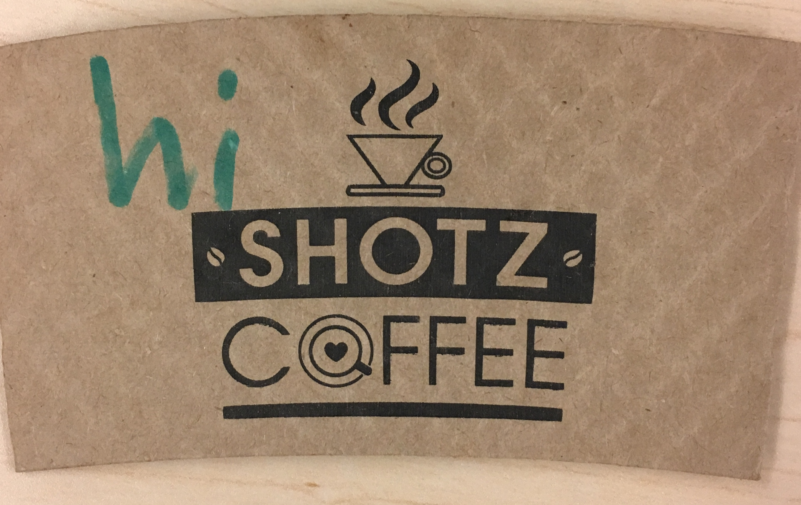

| Business name | Location | Ranking out of 10 | Comments | What genre of music would this chai latte be? |
|---|---|---|---|---|
| Because Coffee | Eureka | 6.3 | The chai itself we can give a 5.8. It's not super spicy, and it kind of tastes like the back of an envelope. Pleasant enough, but not amazing. +0.5 points for ambience, and the barista allowed us to add sugar to our own tastes. Your editors wish all cafes allowed us to customize to our tastes so precisely, and the coffee shop itself was exceptionally cozy and welcoming. | acoustic guitar instrumentals |
| Cafe Brio | Arcata | 7.5 | Uses local, organic Planet Tea chai. Very spicy, and we got to watch the barista make our chais. This chai is spicier and less sweet than that of, say, Ramone's Old Town, but it was very delicious and not too caffeinated. | latin rock |
| HSU Library Cafe | Arcata | 6.5 | Tastes fine overall, but can feel sticky and overly sweet. Seems to vary depending on who's making it. | soft pop |
| Los Bagels | Arcata | 6.5 | It's good. Sometimes tastes too sticky/sugary, but I still buy it on a semi-regular basis. | indie pop-rock |
| Mosgo's Coffee | Arcata | 7.1 | This had a good amount of spice. It was aromatic and flavorful, and I feel like it was a solid chai. I would buy it again. | samba music |
| Northtown Coffee | Arcata | 6.2 | Caffeine content: HIGH. This is a challenging and mysterious chai-- very spicy, very milky, not at all sweet. It's a drink for advanced chai connoisseurs, not your usual chai latte. | hard bop jazz |
| Ramone's Harrison | Eureka | 4 | They put some form of chili powder in my chai. I know it's a spicy chai, but the extra heat was unusual. | hard rock |
| Ramone's Old Town | Eureka | 7.3 | Came without milk foam, which I liked because they could fill my cup to the brim with liquid. I feel like I got my money's worth, and it was pleasantly aromatic. | classical cello music |
| Shotz Coffee | Fortuna | 7 | No milk foam, but I could taste the milk (in a good way).
They wrote "hi" on my cup's sleeve. I thought it was cute.

|
epic, cinematic soundtrack music |